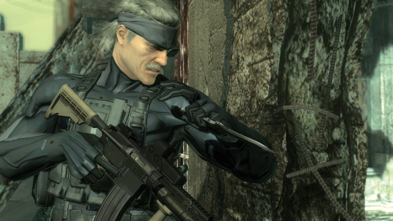
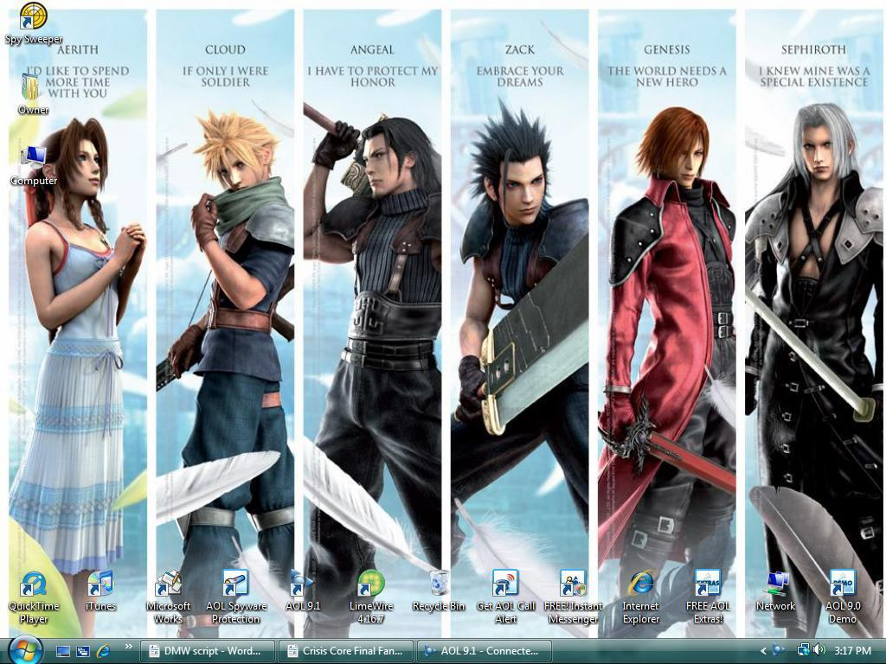
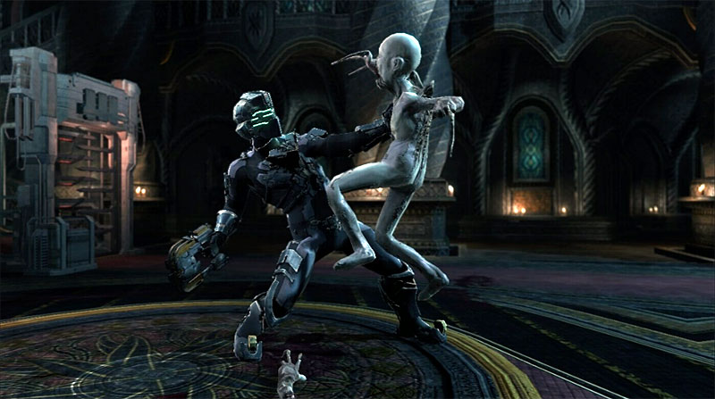
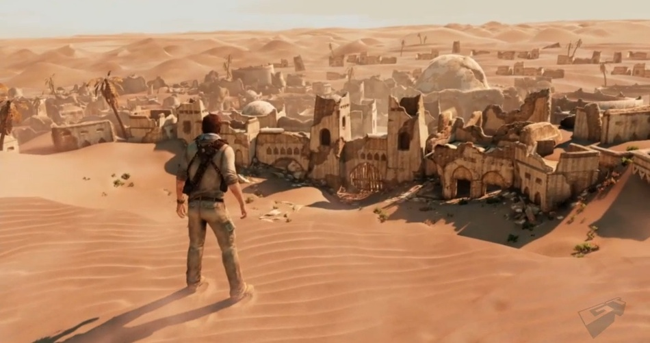
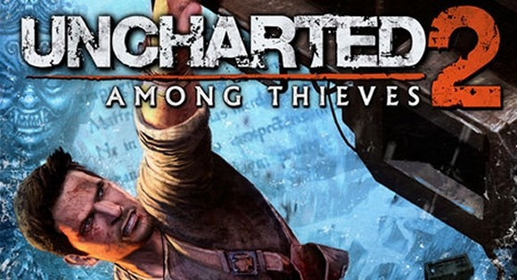
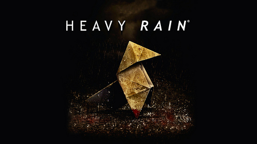
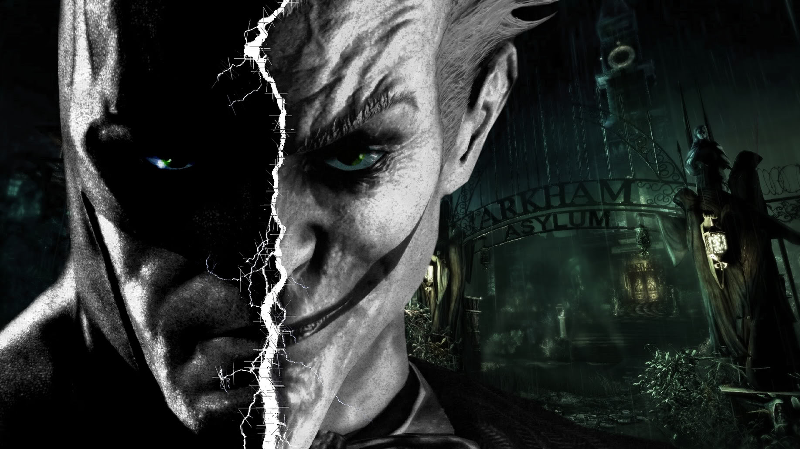
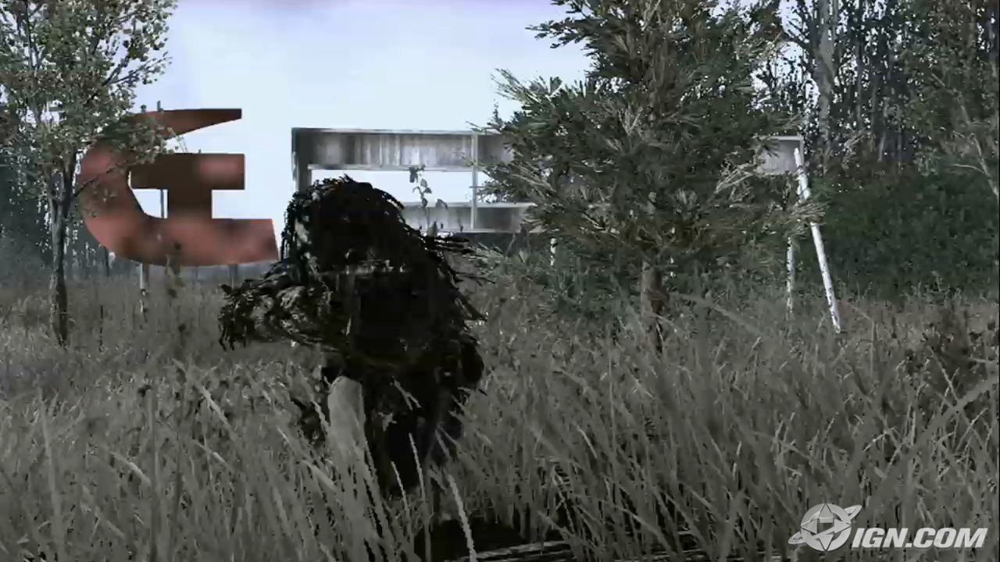

Ranking de los 11 mejores videojuegos según yo
NUM 11:
METAL GEAR SOLID 4

Sinopsis
La historia se sitúa en el año 2014, cinco años después del Incidente Manhattan acontecimientos ocurridos en el capítulo de la Planta de Metal Gear Solid 2; y nueve años después de que FOXHOUND asaltara la isla de Shadow Moses, en donde Solid Snake fue inyectado con un retrovirus llamado FOXDIE. Solid Snake aparece considerablemente envejecido debido a su avanzada degeneración celular, establecido desde un principio en el proceso de clonación que lo creó, y ahora tiene solo seis meses de vida. Metal Gear Solid 4 retrata un mundo donde el dominio militar en tierras extranjeras es el objetivo para dominar la economía, llevando a mercenarios a pelear grandes batallas con fines financieros mediante las PMC.
Ranking de los 11 mejores videojuegos según yo
NUM 10 :
FINAL FANTASY CIRSIS CORE

Sinopsis
Nos narra la vida de Zack un soldado
De segunda clase y la búsqueda de
convertirse en héroe pero para ello
tendrá que pelear contra Shinra
y horribles monstruos pero
también por el amor de su vida Aerish.
Ranking de los 11 mejores videojuegos según yo
NUM 9:
DEAD SPACE 2

Sinopsis
Este juego comienza situado después
de la primer aventura del ingeniero
con la mejor suerte del mundo
situado sobre una nave espacial
y atado sobre una cama de fuerza.
Ranking de los 11 mejores videojuegos según yo
NUM 8:
KIRBY

Sinopsis
Este juego nos presenta al personaje
más fuerte del mundo de los videojuegos
cuyo nombre es kirby el juego es género
plataformero.
Ranking de los 11 mejores videojuegos según yo
NUM 7:
UNCHARTED 3

Sinopsis
Tercera parte del aventurero más idiota y suertudo del mundo.
Ahora nos transporta hacia el pasado haciendo énfasis en
el presente haciendo la aparición de Katherine Marlon.
Ranking de los 11 mejores videojuegos según yo
NUM 6:
DEVIL MAY CRY 3

Sinopsis
La historia sirve como pre-cuela del primer Devil May Cry,
Dante es un joven arrogante y compulsivo, que se ve envuelto
En una misión de derrotar a su hermano gemelo Vergil, que planea
Abrir las puertas del infierno para obtener el poder de su padre Sparda.
Ranking de los 11 mejores videojuegos según yo
NUM 5 :
RESIDENT EVIL

sSinopsis
La historia sigue a Leon S. Kennedy, uno de los supervivientes del desastre de Raccoon City; este es enviado a una misión especial para rescatar a Ashley Graham, la hija del presidente de los Estados Unidos, que ha sido secuestrada por una extraña organización. Él viaja a una aldea rural situada en España con la finalidad de encontrar pistas sobre ella, pero su investigación se dificulta cuando una horda de aldeanos violentos lo ataquen sin razón alguna.
Ranking de los 10 mejores videojuegos según yo
NUM 4:
UNCHARTED 2

Sinopsis
Uncharted 2: El Reino de los Ladrones, titulado originalmente Uncharted 2: Among Thieves ("Entre Ladrones"), es un videojuego de acción-aventura en tercera persona para PlayStation 3 desarrollado por Naughty Dog y publicado por Sony Computer Entertainment.5 Es la secuela del juego de 2007, de la misma saga, Uncharted: El Tesoro de Drake y la continuación prevista del mismo es Uncharted 3: La traición de Drake.
Ranking de los 11 mejores videojuegos según yo
NUM 3:
HEAVY RAIN

Sinopsis
Que se puede decir de una de las aventuras gráficas más esperadas de los últimos tiempos. Mucho y mucho ya que el juego causo una gran revolución. PS3 nos brinda una gran exclusivo que seguramente quedara en un nuestra memoria por mucho tiempo.
Ranking de los 11 mejores videojuegos según yo
NUM 2:
BATMAN ARKHAM ASYLUM

Sinopsis
La historia de Arkham Asylum se basa en la saga de Mythos, donde El Joker ha elaborado un plan para liberar a varios enemigos de Batman que se encuentran en el manicomio de Arkham. Batman investiga sobre el caso y descubre que lo que quiere el Joker es una toxina de super esteroides llamada «Títan» y usarla para crear un ejército de monstruos y enviarlas a Gotham City.
Ranking de los 11 mejores videojuegos según yo
NUM 1:
CALL OF DUTY 4 MODERN WARFARE

Sinopsis
La historia toma lugar en el año 2011, donde un líder radical ha ejecutado al presidente Al-Fulani que preside un país sin nombre con localización en Oriente Medio, y un movimiento «ultranacionalista» da inicio a una guerra civil en Rusia.